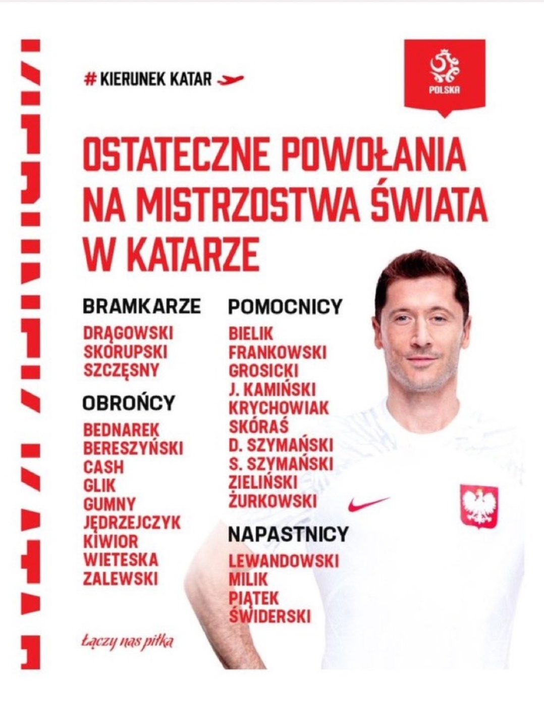
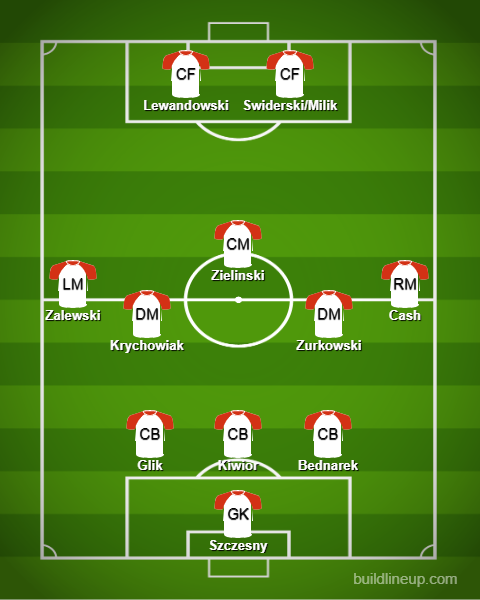

Squad Reaction - Poland

Order: Goalkeepers, Defenders, Midfielders, Attackers
With the likes of Mexico and Argentina in their group here is hoping Lewandowski can do well in possibly his last World Cup. The usual system at play for Poland seems to be a 3 at the back formation so I’ll probably be centering my lineup with the same formation. In goal, Szczesny is a mainstay and Dragowski is a young development keeper who can hopefully take over from him. In the defense, the 3 CBs I would trust are Bednarek, Glik and Kiwior. On the left Zalewski seems to be trusted by the coach. He plays for Roma, is young and OTW. On the right, I would probably put my trust in Cash. I mean he decided to join Poland from England for crying out loud. In midfield, Zielinski is a lock-in. On the defensive side, it will probably be Krychowiak and Zurkowski. Up front, we could expect to see Lewandowski and probably between Milik and Piatek. However, Swiderski was starting in their last game against Wales(L). I would rather trust Milik or Piatek but let’s see.
The lineup:
